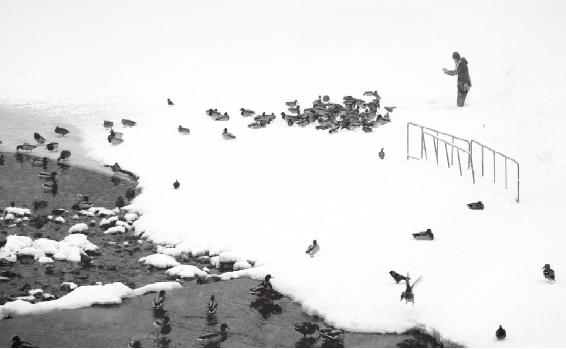

就时运而言，中医讲究“五运六气”。
什么叫“五运”？我们以前讲了，是木、火、土、金、水五行之气在天地间的运行变化。五运是由天干来控制的。天干一共有十个：甲、乙、丙、丁、戊、己、庚、辛、壬、癸。
什么叫六气？六气是指风、寒、暑、湿、燥、火。它对上半年和下半年气候的影响不一样。这个六气呢，跟地支有关系，子、丑、寅、卯、辰、巳、午、未、申、酉、戌、亥。地支分为两组，一组有六年，每两个年都有相同的气。
经文：
中央者，其地平以濕，天地之所以生萬物也眾。其民食雜而不勞，故其病多痿厥寒熱，其治宜導引按蹻，故導引按蹻者，亦從中央出也。
徐文兵：上一次，我们讲解了什么是导引按跷。今天先说几个问题。
第一个，说说甲型H1N1。2009年年初，我说今年是土运不及，太阴湿土司天（湿土太重），容易闹瘟疫，年底就应验了。虽然甲型H1N1的蔓延趋势不能说失控，但是也让很多人谈之色变。
以前咱不敢谈这个事，因为没有实战经验，没治过。但在国家对甲型H1N1的控制与防治过程中，中医发挥了很大的作用，这让很多人开始对中医有了信心。而从治疗甲型H1N1的病例中来看，中药退烧的效果也确实不错，基本上一付药就能控制病情。
从治疗甲型H1N1的病例中来看，中药退烧的效果也确实不错，基本上一付药就能控制病情。
其实，甲型H1N1的流行就是寒热瘟疫。我们前面说过了，“中央者，其地平以湿”，容易得“痿厥寒热”。而这个寒热瘟疫，就是伤寒病，历朝历代都有，早在张仲景那个年代就出现了。所以，我们不必惊慌。
人在地球上生存这么多年了，都是跟细菌、病毒和谐共处的，你活你的，我活我的。偶尔时运到了，战斗一下，然后又会相安无事。
人在地球上生存这么多年了，都是跟细菌、病毒和谐共处的，你活你的，我活我的。偶尔时运到了，战斗一下，然后又会相安无事。
现在的医疗体制有个特点，不管是什么病毒，医生老是站在研究病因的角度上，一得病，先分析病因是什么，然后再去治疗。这是目前一种流行的治病方法，从西方传来，叫对“因”治疗。就是说，你得了什么病，我发现原因，把原因解决了，你的病不就好了吗？但这种治病模式忽略了什么？忽略的是发病条件。为什么我们说“有因不见得有果”？因为缺少“缘”，有“因”有“缘”才能结果。
中医关注的与西医不同，它不关心你的“因”，而是关心的身体内在系统“缘”。也就是说，如果你身体的内在系统保护得好的话，第一，你不会发病；第二，即便你发病了，身体也能很快把病毒干掉，恢复常态。
中医关注的与西医不同，它不关心你的“因”，而是关心的身体内在系统“缘”。
要是按照西方那种解决问题的方法，第一要找到病因，一查核糖核酸，噢！你是甲型H1N1病毒（病毒是否有变异再说），然后先灭活病毒，再做个疫苗注射，你就对它有免疫力了。
灭活的病毒有个特点，它不能在人体内大规模地复制，被限制住了。但是如果这个病毒变异了，那还得再做新的疫苗。内因为主，外因为辅，所以说，真正解决问题的关键在于——解决我们人本身的问题。
灭活的病毒有个特点，它不能在人体内大规模地复制，被限制住了。但是如果这个病毒变异了，那还得再做新的疫苗。内因为主，外因为辅，所以说，真正解决问题的关键在于——解决我们人本身的问题。
其实，我们为什么相信疫苗会起作用？前提是相信人体的免疫系统能消灭病毒。与其造一个疫苗出来，还不如真刀真枪干，帮助人的免疫系统尽快恢复，也就是中医讲的强大自己的正气，这样就等于是终身免疫了。哪怕病毒有变异，免疫系统也能把它干掉。
所以说，不要老想着把病毒全部消灭掉。应该想到，要和谐共处，相安无事，因为对于病毒来说，它也有它存在的原因。
我一直认为，人类之所以没有灭绝，就因为有天生的本领能把病毒干掉。当然，你愿意去打疫苗，也可以打。但对于相信自己能够战胜病毒的人来说，他会这样做：第一，增强体质，预防疾病；第二，得了病以后，用中药去调理。这也是我的建议。
我一直认为，人类之所以没有灭绝，就因为有天生的本领能把病毒干掉。
梁冬：讲到这里，让我联想到爱情这件事。很多年轻人在对待爱情的问题上执迷不悟，总是苦苦追求。其实，时间过了，就没有爱情了，那就让它过去吧。从某种程度上来说，爱情也是一种激素嘛。
很多年轻人在对待爱情的问题上执迷不悟，总是苦苦追求，其实，时间过了，就没有爱情了，那就让它过去吧。从某种程度上来说，爱情也是一种激素嘛。
徐文兵：你说“素”，还是停留在物质上。爱情本身有一种对气和对神的感应。为什么说两个人一对眼儿就来电呢？不是有什么物质注射到人的体内了，而是一种更高级的交流。所以，人在爱情面前变得很“犯贱”，为他（她）这也愿意，那也愿意，死也愿意，原因是被勾了魂儿了！
梁冬：对！但爱情还有个时间因素，就像五运六气一样。这几年，有首歌唱“总之那几年，我们两个没有缘”，就是说爱情这个东西要靠两个人心生感应。感应到了，就会有几年爱得死去活来。但过了这几年，哎，过去了，也就让它过去吧！
有的人娶个老婆旺夫，他们的天干就是一种相生的关系。有些人娶了老婆以后败家、倒霉，那可能是天干不合。
有的时候，回过头去看看自己的初恋情人，爱得死去活来的，但过去也就过去了。
徐文兵：对，再比如说结婚这事儿，有些地方搞封建迷信，挑结婚对象要看两个人的出生年份，什么“白马配青牛，到老什么不到头”之类的。其实，他们看的是地支，比这更重要的应该是天干！就是说看你出生的是什么年。有的人娶个老婆旺夫，他们的天干就是一种相生的关系。有些人娶了老婆以后败家、倒霉，那可能是天干不合。
梁冬：呵呵，这个技术问题太复杂，咱们就不在这里探讨了。
徐文兵：就时运而言，中医讲究“五运六气”。
什么叫“五运”？我们以前讲了，是木、火、土、金、水五行之气在天地间的运行变化。五运是由天干来控制的。天干一共有十个：甲、乙、丙、丁、戊、己、庚、辛、壬、癸。按照推算，2009年是己丑年，这是一个土运不足的年，容易产生湿气，所以人容易得脾胃（消化系统）方面的疾病。
什么叫“五运”？我们以前讲了，是木、火、土、金、水五行之气在天地间的运行变化。五运是由天干来控制的。天干一共有十个：甲、乙、丙、丁、戊、己、庚、辛、壬、癸。
另外，什么叫六气？六气是指风、寒、暑、湿、燥、火。它对上半年和下半年气候的影响不一样。这个六气呢，跟地支有关系，子、丑、寅、卯、辰、巳、午、未、申、酉、戌、亥。地支分为两组，一组有六年，每两个年都有相同的气。比如说，丑年和未年，就是轮到了属牛和属羊的那一年，这两个年份的上半年和下半年的气都有共同点。
另外，什么叫六气？六气是指风、寒、暑、湿、燥、火。它对上半年和下半年气候的影响不一样。这个六气呢，跟地支有关系，子、丑、寅、卯、辰、巳、午、未、申、酉、戌、亥。地支分为两组，一组有六年，每两个年都有相同的气。
2009年上半年叫太阴湿土，下半年叫太阳寒水。所以，这一年的上半年湿气比较大，雨水比较多。到了下半年以后呢，寒气比较大。这一年很奇怪的，从11月初到11月中，连下了三场雪，寒气和湿气都比较大。
记得“非典”是哪一年吗？2003年。那一年叫癸未年，就是未年，属羊的那年。大家可以查一下《黄帝内经》，它里面专门有对五运六气有论述：到了未年和丑年，流行的都是寒气和湿气。而它们唯一的区别是什么？就是天干不一样。
2003年（癸未年），天干是火，火克金，表现为人体的肺不舒服。2009年（己丑年），天干是土，湿气重，土克水，所以得甲流的人多，而且死了很多人，都死在了脑水肿上，颅内出现了水肿，甚至有几个新生儿都这么去世的。所以，我们再去看《黄帝内经》对五运六气的论述，就会明显地感觉到甲型H1N1的出现不是意料之外的了。
2009年是土年，上半年是湿土，下半年是寒水，寒气和湿气碰到一块儿，所以才给病毒的发生提供了一个很好的“缘”——条件，人才会得这种病。
即使“缘”没了，病毒还将继续存在，病毒是消灭不了的。2009年，为了防病毒，坐飞机的人都要接受调查，然后被关到宾馆里。后来，地铁也出现了感染者。其实，与其去防因，不如去解决“缘”。所以，2009年年初，我就提醒大家说，一定要注意自己的肠胃系统，不要吃那些寒性的、湿气大的东西。
即使“缘”没了，病毒还将继续存在，病毒是消灭不了的。
2003年的“非典”，发病者以青壮年居多，小孩相对较少，其实与小孩自身阳气旺盛，抵抗力强有关。但甲型H1N1不好说，如果小孩老是喝冷饮的话，也很有可能得这个病。

寒气和湿气碰到一块儿，也需要一种『缘』。
徐文兵：按照五运六气的理论，一年要分六个气：初之气厥阴风木，二之气少阴君火，三之气少阳相火，四之气太阴湿土，五之气阳明燥金，六之气太阳寒水。2009年是比较寒湿的一年，上半年是太阴湿土，下半年是太阳寒水。本来2009年下半年就叫太阳寒水，然后又赶上正常的六之气又是太阳寒水，所以，这一年的冬天比往年要冷。
按照五运六气的理论，一年要分六个气：初之气厥阴风木，二之气少阴君火，三之气少阳相火，四之气太阴湿土，五之气阳明燥金，六之气太阳寒水。
因而我特别强调有“四大不能吃”：绿茶，您别喝了，太寒；水果，您吃少点儿，太湿；牛奶，您别喝了，既寒又湿；冷饮，您也别吃了，太寒。
从甲型H1N1的治疗上来说，治疗效果最好的西药叫“达菲”。“达菲”是从哪儿提炼出来的呢？大料！就是从八角、茴香里提炼出来的，都是纯阳之物。
中医怎么去治疗这个寒气和湿气？其实，中药里专门有很多香料药都是芳香化湿的，除了大料，还有草豆蔻、白豆蔻、肉豆蔻这些我们平常炖肉时用的香料药。此外，祛除寒、湿还有一味药叫苍术（zhú），苍是苍白的“苍”，术写作算术的“术”，念（zhú）。
中医能够治疗瘟疫，救治这么多人的命，就靠这些中医药。
远的咱不说，就说建国以后。1954年，在石家庄、华北平原一带，突然流行乙型脑炎。乙型脑炎都是小儿患病，高烧后抽搐，角弓反张，整个人抽起来，最后就死掉了。当时中国请来了很多西医专家，可也没办法。最后用中医治疗，用的是清热解毒、清热养阴的药，效果很好。
当时的主方叫白虎汤，里面有四味药：石膏、粳米、知母、甘草。为什么叫白虎汤呢？我们都知道，东方青龙，南方朱雀，西方白虎，北方玄武。西方，一是代表秋天，二是代表西方日落。“日落”就是指人发烧不烧，阳气退进的时候。白虎现，高温退，所以给它起名叫“白虎汤”。更有意思的是白虎汤里有主要的两味药：粳米和石膏。它们都是白色，都是属于这种咸寒入肺的药，所以用白虎汤治乙型脑炎效果特别好。
我们都知道，东方青龙，南方朱雀，西方白虎，北方玄武。西方，一是代表秋天，二是代表西方日落。“日落”就是指人发烧不烧，阳气退进的时候。
1954年，主持用这个方子治疗“乙脑”的功臣姓郭，是石家庄地区的一位中医，当时还得到了政府的表彰。第二年，1955年，北京地区也开始流行“乙脑”，又用白虎汤，效果就不行了！人们很疑惑，为什么不行了？那时出来个名医叫蒲辅周，他是从四川调入北京的，北京四大名医之一，非常高明，常为国家领导人看病。
蒲辅周用五运六气去推测，说，1954年是甲午年，这年的特点是火气比较旺，但第二年1955年是乙未年，变得湿气重了。所以，治“乙脑”应该在白虎汤清热的基础上再加一味苍术。加了一味药之后，这个白虎汤马上就有效了，很快就把北京地区的瘟疫给灭掉了。
到了1956年，“乙脑”又起来了。这时，蒲辅周说，这种湿气靠发散解决不了，应该让它从小便排出去。为什么呢？因为这一年的湿气跟水一样，是阴邪。
我们都知道，阴邪的东西最后都要伤人的阳气，而中医最早治疗湿邪，就像大炮打蚊子一样，用的是麻黄、附子、细辛这些药。但这湿邪有个特点——如油入面，就是说，沾上湿气后就很难剥离出来了。所以，那种简单粗暴的辛温药就不大合时宜。1956年是丙申年，蒲辅周根据五运六气的特点推算，治乙脑应该从下焦把湿气给渗出去，叫淡渗利湿。当时他用了两个治温病的方子：三仁汤和杏仁滑石汤，非常有效。
到了2003年治“非典”，邓铁涛老先生高举着“中医药治疗非典”的大旗，强调“祛湿”。 当年，红叶老师也参与了国家中医药管理局治“非典”的方案中来，他当时用的方子叫“甘露消毒丹”，里面用的是白豆蔻、藿香、杏仁、滑石、木通、菖蒲这些药，上面清热，中间化湿，下面利湿。就是这个方子，把令人谈之色变的“非典”给治好了，而且死亡率几乎为零。
后来，樊正伦教授在2003年推断说，这个“非典”是太阴湿土导致的，等到“非典”的下半年，少阳相火主气时，风能胜湿，它就不会那么嚣张了。当年“非典”肆虐的时候，出租车司机很少得这个病，为什么？他们整天开着车，吹着风。而住在北京地下室的那些人得“非典”的多。更严重的是，很多医院的急诊室都在地下，空气不流通，清洁工还整天拿巴氏消毒液拖地，里面湿气特别大，因此工作人员和住院的病人就容易得“非典”。
当年“非典”肆虐的时候，出租车司机很少得这个病，为什么？他们整天开着车，吹着风。而住在北京地下室的那些人得“非典”的多。
关于“非典”，更可笑的是在2004年，当时国家试验室正在研究“非典”病毒，有个研究员回趟家，居然把病毒带出来了。后来他发病了，但周围的人没啥事，为什么？病毒还在，时间过了，没有缘，它不可能有发病的机会。
梁冬：我常常跟朋友说，你只要能理解“有几年鱼会多产，有几年荔枝会减产”，就能理解什么是五运六气。其实，天地也有一个循环的过程。
徐文兵：包括气候也是这样。现在媒体不是炒作一个概念叫“全球气候变暖”吗？但你去看北京的大雪，哪像全球变暖的样子。我觉得，在某种程度上，全球气候变暖可能又是一个商业阴谋。
现在媒体不是炒作一个概念叫“全球气候变暖”吗？但你去看北京的大雪，哪像全球变暖的样子。我觉得，在某种程度上，全球气候变暖可能又是一个商业阴谋。
现在发达国家已经开始向发展中国家购买碳排放量了，这不是已经开始商业化了么？前几年，英国一些科学家的电子邮件被曝光了，人们发现，这些科学家在人为地篡改一些数据，制造一种恐慌，像什么全球变暖、海平面要升高、要淹死多少人等，都是为了从中谋取利益，这就是这些言论背后的一种动机。
我曾经查看过有历史记载的关于中原地区气候变化的起伏线，其中涉及到一个问题。《上古天真论》第一句话是：“余闻上古之人春秋皆度百岁。”为什么不说“春夏秋冬皆度百岁”？孔子写历史书，叫《春秋》，为什么不用春夏秋冬做书名呢？
在远古、上古那个年代，中原地区只有两季，一个“春”，一个“秋”，没有“夏”、没有“冬”！由于气候很暖，物产也很丰富，所以中原地区经常出没老虎、豹子等动物。
在远古、上古那个年代，中原地区只有两季，一个“春”，一个“秋”，没有“夏”、没有“冬”！
后来，气候慢慢地进入了另一个阶段，开始变冷。而且，在这个阶段还出现了战争——为了争夺食物。北方游牧民族逐水草而居，他们一看牛羊没草吃了，慢慢就跑到长城以内，为了抢食物爆发大规模战争。气候变化又导致瘟疫丛生，中原地区很多人都得了大病，无力打仗，这就导致了后来清兵入关。
中学有一篇课文叫《甲申三百年祭》，郭沫若写的，告诫我们在赢得胜利之前，不要学李自成骄傲自满，停滞不前。甲申三百年（1644年），就是李自成攻下明朝北京城，逼得崇祯皇帝自杀那一年。而吴三桂领清兵入关的那年，也是甲申年。
为什么十几万八旗兵就能横扫中原呢？推算一下，甲申年的前一年是癸未年，2003年也是癸未年，癸未年是太阴湿土司天，太阳寒水在泉，瘟疫大爆发。所以，在甲申年的前一年，中原地区发生了大面积的瘟疫，死了好多人，而且跟2003年一样，死得都是青壮年。这才有了第二年清兵入关，横扫天下。
梁冬：中国的医学真是太伟大了！由此可见，疾病跟国家命运是紧紧联系在一起的。
徐文兵：五运六气，五运是五年转一圈，比如说2009年是土不足，五年以后就是土太过。而六气是六年转一圈，2003年与2009年相距六年，又赶上太阴湿土和太阳寒水，人们得的又是寒湿的病。所以，在2009年，我曾经建议大家首先注意饮食，其次要保持自己肠胃的温度，别着凉，平常多在饮食里面加一些芳香、化湿的食材和药材。
五运六气，五运是五年转一圈，比如说今年是土不足，五年以后就是土太过。
这样算来，五年和六年一搭配，六十年是一个甲子。天干与地支循环相配，可组成甲子、乙丑、丙寅等60组纪年。《甲申三百年祭》写于1943年，距三百年前的1644年，正好是五转。而1644年到2003年，正好是六转（360年），也就是说，如果你在2003年纪念李自成，就该写《甲申三百六十年祭》了。
甲子是我们中国人纪年的方法。它将天上星球的变化、地上的风、寒、暑、湿、燥、火密切联系起来。
甲子是我们中国人纪年的方法。它将天上星球的变化、地上的风、寒、暑、湿、燥、火密切联系起来。
我一直想写一本历史书，用甲子纪年来写，把名人出生在什么纪年都标上，比如说乙丑，甲子，癸未年，这一年发生了什么事情，流行什么疾病，把历史上的人和事串起来。
其实，这么研究历史是客观的。现在流行用西方灌输过来的一套思想研究中医，搞得中医研究和研究中医成为两个流派。本身是中医，就要用中医的理论方法去观察事物得出客观结论，而不是把中医当成一个实体，放在解剖台上，用“系统论”“控制论”来研究。现在就是研究中医的人太多，搞中医研究人的太少了！
梁冬：这话说得有道理，什么是本？什么是体？要先搞清楚是“六经注我”还是“我注六经”！